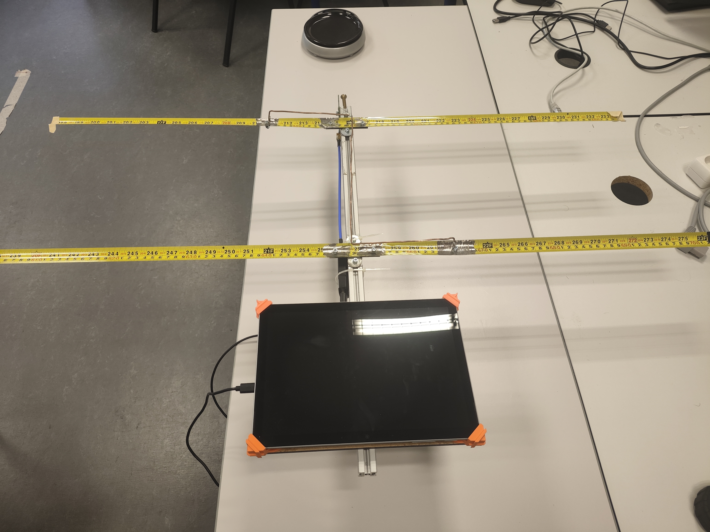
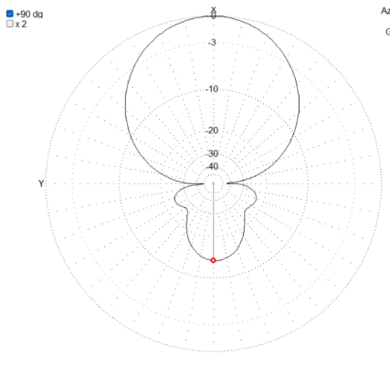
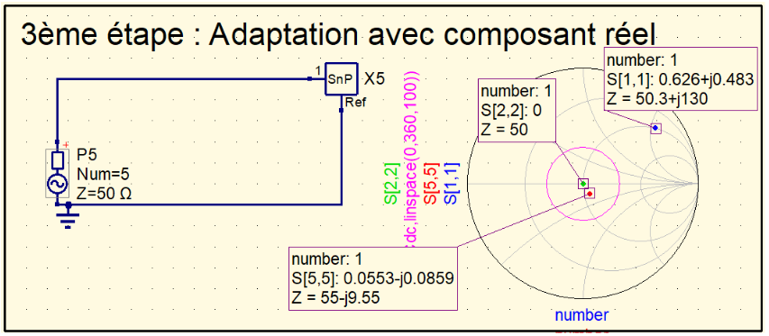
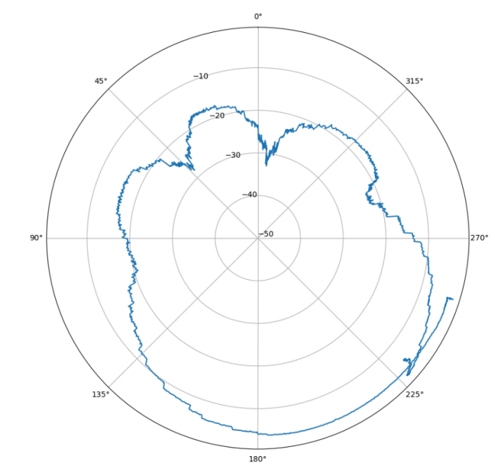

Réalisation de l'antenne
Pour réaliser ce projet, il nous a été fourni un cahier des charges auquel le produit devait strictement correspondre.
L'objectif de ce projet était la réalisation d'une antenne de radiogoniométrie. La radiogoniométrie consiste à trouver la position géographique d'un émetteur caché (une balise radio) en cherchant d'où provient son signal. Notre antenne devait être reliée à une clé réceptrice spéciale (SDR) connectée à une tablette, le tout manipulé à bout de bras par un utilisateur sur le terrain pour traquer une balise émettant sur la fréquence radio de 144 MHz.
Le cahier des charges est disponible ici1 - Conception préliminaire
La première étape, la conception préliminaire, constitue une ébauche des solutions possibles correspondant aux exigences du cahier des charges. Nous allons analyser et choisir notre matériel exigence par exigence.
Exigence de Dimensions et de Type d'Antenne
Le cahier des charges impose que notre antenne tienne dans un espace maximal de 0,6 m par 1,2 m pour rester transportable. Pour capter efficacement la fréquence de 144 MHz, nous avions le choix entre deux grandes géométries : l'antenne YAGI (l'antenne râteau classique des télévisions) et l'antenne HB9CV (une antenne à deux éléments reliés par un petit fil conducteur appelé "gamma").
En faisant nos calculs, nous avons remarqué qu'une antenne YAGI aurait nécessité des éléments physiques beaucoup trop longs pour capter le 144 MHz, dépassant les dimensions autorisées. C'est pour cela que nous avons retenu l'antenne HB9CV. Elle est beaucoup plus compacte et s'intègre parfaitement dans les dimensions exigées.
Exigence de Directivité, de Gain et d'Ouverture
Pour localiser précisément une balise, notre antenne doit obligatoirement être "directive". Cela signifie qu'elle doit capter énormément d'énergie à l'avant (là où on la pointe) et rien du tout sur les côtés ou à l'arrière. Le cahier des charges exigeait un rapport avant/arrière supérieur à 3 dB (l'avant doit capter nettement mieux que l'arrière) et un angle d'ouverture inférieur à 160°. C'est l'angle dans lequel notre antenne capte le mieux le signal ; hors de cet angle, l'antenne capte le signal divisé de moitié, ou moins, en puissance. Le rapport avant/arrière permet de chiffrer la directivité de l'antenne : plus il est important, plus l'antenne capte le signal vers l'avant, et moins vers l'arrière.
Pour valider cela avant toute fabrication, nous avons simulé notre antenne HB9CV sur le logiciel MMANA-GAL. Les graphiques obtenus ont montré un immense cône de capture à l'avant et une extinction presque totale à l'arrière. La simulation nous a donné un rapport avant/arrière excellent de 13,5 dB, ce qui valide largement cette exigence.

Exigence de Fréquence et d'Impédance théoriques
L'antenne doit résonner parfaitement à 144 MHz. Ce qui signifie qu'elle doit capter les signaux à 144 MHz mieux que tous les autres. L'impédance, c'est la résistance électrique qu'oppose l'antenne au signal qui la traverse. Pour que l'énergie s'écoule parfaitement sans se perdre, cette impédance doit être la plus proche possible de 50 Ohms (la norme standard en radio).
Notre simulation informatique préliminaire nous a indiqué que notre antenne brute présentait une impédance complexe de 52,45 Ohms de résistance, mais avec une perturbation parasite (appelée partie imaginaire) de +39,78j Ohms. Pour annuler cette perturbation parasite (comme on annulerait un contrepoids), nous avons calculé qu'il faudrait ajouter en série un petit composant électronique : un condensateur.
Exigence de Choix des Matériaux
Pour les éléments physiques de capture (le directeur à l'avant et le réflecteur à l'arrière), le cuivre aurait été idéal pour l'électricité, mais l'antenne aurait été trop lourde et n'aurait pas respecté l'exigence de rigidité ; l'antenne n'aurait pas été à mémoire de forme. Nous avons donc choisi la solution suivante : un bras central (le boom) en profilé d'aluminium pour la légèreté, la rigidité et la conductivité électrique, et des branches en mètre ruban en acier. Le mètre ruban est conducteur, très léger, et possède une mémoire de forme parfaite : si on frôle un arbre pendant la chasse, l'élément se plie et se remet droit tout seul.
L'ensemble de cette étude technique de faisabilité a été regroupé dans notre dossier de conception préliminaire.
2 - Conception détaillée
Après avoir validé cette ébauche, nous réalisons la conception détaillée. Ici, nous développons concrètement les plans de fabrication précis et adaptons la théorie aux composants réels du commerce, exigence par exigence.
Exigence des Dimensions Fixes des Éléments
La vitesse des ondes radio divisée par notre fréquence nous donne notre longueur d'onde physique (symbole Lambda λ), qui est ici de 2,08 mètres. À partir de cette mesure physique universelle, nous avons calculé précisément la taille millimétrée de nos pièces en acier : notre bras central fera 60 cm de long, notre élément Directeur (à l'avant) fera exactement 95,8 cm et notre élément Réflecteur (à l'arrière) fera 104,1 cm. Les longueurs calculées sont en fait un coefficient fixe multiplié par la longueur d'onde (lambda).
Exigence d'Adaptation d'Impédance Réelle
À cette étape, nous trouvons que nous devons mettre un condensateur de 27,78 pF. Il doit nous permettre d'être dans la zone de tolérance des -10 dB imposée par le client. Cela signifie que l'antenne n'atténue pas, ou très faiblement, le signal à 144 MHz. Nous ne mettrons pas cette valeur de condensateur car les caractéristiques réelles de l'antenne diffèrent des caractéristiques théoriques.
Exigence de Connectique et Solidité
Le signal capté doit être envoyé vers la clé réceptrice sans aucune fuite. Le cahier des charges impose un connecteur de type SMA femelle solidaire de l'antenne. Nous le soudons à une plaque de type PCB qui fait le lien entre l'antenne, le condensateur d'ajustement et la clé réceptrice. La plaque de circuit imprimé et la clé réceptrice sont reliées par un câble coaxial ; en effet, la carte se situe à l'avant de l'antenne tandis que la clé réceptrice est à l'arrière.
Toutes les étapes de la conception sont détaillées dans le dossier de conception disponible ci-dessous.
Le dossier de conception final est disponible ici3 - Fabrication de la carte et de la structure
Afin de fabriquer notre antenne, nous avons suivi le protocole détaillé dans le document appelé LCF (Liste de Contrôle des règles de Fabrication), qui nous sert de guide pour cette étape.
Nous avons commencé par découper nos rubans d'acier aux dimensions exactes calculées dans le dossier de conception, puis nous les avons percés proprement. En parallèle, nous avons fabriqué notre petite carte électronique en y soudant notre connecteur SMA femelle.
Ensuite est venue l'étape de l'assemblage mécanique : nous avons fixé nos éléments en ruban sur le rail en aluminium à l'aide de vis et de cales. Un point très important lors de cette fabrication : l'aluminium est recouvert d'une couche de vernis isolant. Nous avons dû poncer les zones de contact entre l'aluminium et le mètre ruban avec du papier de verre pour que le courant électrique puisse circuler librement. Enfin, nous avons installé la poignée de maintien (la crosse) constituée d'un petit morceau de profilé d'aluminium et fixé le support de la tablette de 10 pouces, réalisé sur mesure grâce à une imprimante 3D.
Le protocole de fabrication est disponible ici4 - Vérification de la conformité
Maintenant que l'antenne est construite, nous devons prouver scientifiquement que toutes les exigences du client sont respectées. C'est pour cela que nous rédigeons notre dossier de vérification, qui répertorie chaque test et son résultat.
Exigences Mécaniques (Dimensions, Masse et Rigidité)
- Test des dimensions : Mesurée au mètre, notre antenne fait 60 cm de large sur 103 cm de long. L'exigence de taille est respectée, le statut est Conforme.
- Test de la masse : Le cahier des charges interdisait de dépasser un poids total de 1400 g pour que l'antenne soit facilement transportable et tenable lors de la chasse. Nous avons posé l'ensemble complet (antenne, poignée, support, tablette et clé SDR) sur une balance électronique. Son poids était de 1320 grammes. Le statut est Conforme.
- Test de tenue et mémoire de forme : La tablette reste fermement clipsée même en secouant l'antenne. Les branches en mètre ruban reprennent instantanément leur forme après torsion. Le statut est Conforme.
Exigences Électriques (Fréquence et Impédance)
- Test de la fréquence de résonance : Pour ce test, nous branchons l'antenne sur un appareil de mesure appelé VNA (Analyseur de réseau vectoriel). Cet appareil permet, entre autres, de mesurer la fréquence de résonance, c'est-à-dire la fréquence à laquelle l'antenne capte le mieux le signal. C'est là que nous avons constaté une défaillance : l'antenne résonnait initialement à 142 MHz au lieu de 144 MHz. L'antenne captait "trop bas". Pour corriger ce problème de fabrication, nous avons appliqué un correctif en recoupant un centimètre de mètre ruban de chaque côté de notre élément Directeur à l'avant. Après cette modification physique, une nouvelle mesure au VNA a indiqué une résonance parfaite pile sur 144 MHz. L'exigence est validée Conforme.
- Test de l'impédance réelle : Grâce à l'analyseur de réseau vectoriel, nous récupérons les données mesurées afin de les traiter dans un logiciel différent. Nous réalisons donc une étude afin de savoir, avec l'antenne réelle que nous avons, le composant à mettre pour assurer l'adaptation d'impédance. Nous trouvons donc que, pour avoir une antenne parfaitement adaptée, nous devons avoir un condensateur de 8,5 pF. Nous ne pouvons pas utiliser cette valeur car elle n'existe pas, les fabricants ne produisent pas de condensateurs à 8,5 pF ; en revanche, ils en produisent à 8,2 pF. Nous sélectionnons donc cette valeur et la simulons ; nous trouvons que notre antenne sera conforme avec cette valeur. Nous réalisons ensuite une nouvelle mesure avec le condensateur installé, et nous constatons d'après le graphique suivant que l'impédance de notre antenne est dans le cercle admis par l'exigence client. Sur le graphique, le point vert constitue l'adaptation parfaite (avec un condensateur de 8,5 pF), le point rouge l'adaptation réelle (avec le condensateur de 8,2 pF) et le cercle rose représente le maximum à ne pas dépasser ; si nous le dépassons, notre signal à 144 MHz sera trop atténué. Le statut est Conforme.

Exigences de Performance Terrain (Directivité, Gain et Ouverture)
Pour valider les derniers critères, nous nous sommes placés face à une balise. Nous avons fait pivoter notre antenne sur elle-même à 360° pour tracer son diagramme de réception réel (le diagramme ci-dessous).
Les mesures ont confirmé que l'antenne possède un excellent pouvoir directionnel : notre rapport avant/arrière réel a été mesuré à 15 dB (ce qui signifie que l'antenne capte beaucoup plus à l'avant qu'à l'arrière). Nous sommes au-dessus de l'exigence, et dans cette situation, c'est une bonne chose. Sur le schéma, plus le trait bleu est loin du centre, mieux il capte le signal dans cette direction. Nous constatons qu'il est très loin du centre en un point mais moins aux autres endroits, cela signifie que l'antenne va effectivement mieux capter le signal dans une direction privilégiée. De plus, son angle d'ouverture d'écoute est restreint à 90°, ce qui permettra à l'utilisateur de balayer l'horizon pour viser la cible avec une plus grande précision que le minimum requis par le cahier des charges.
Après avoir fait les derniers ajustements de l'antenne (adaptation d'impédance et fréquence de résonance), la matrice de conformité de notre dossier de vérification confirme que toutes les exigences sont validées.

Le dossier de vérification est disponible ici